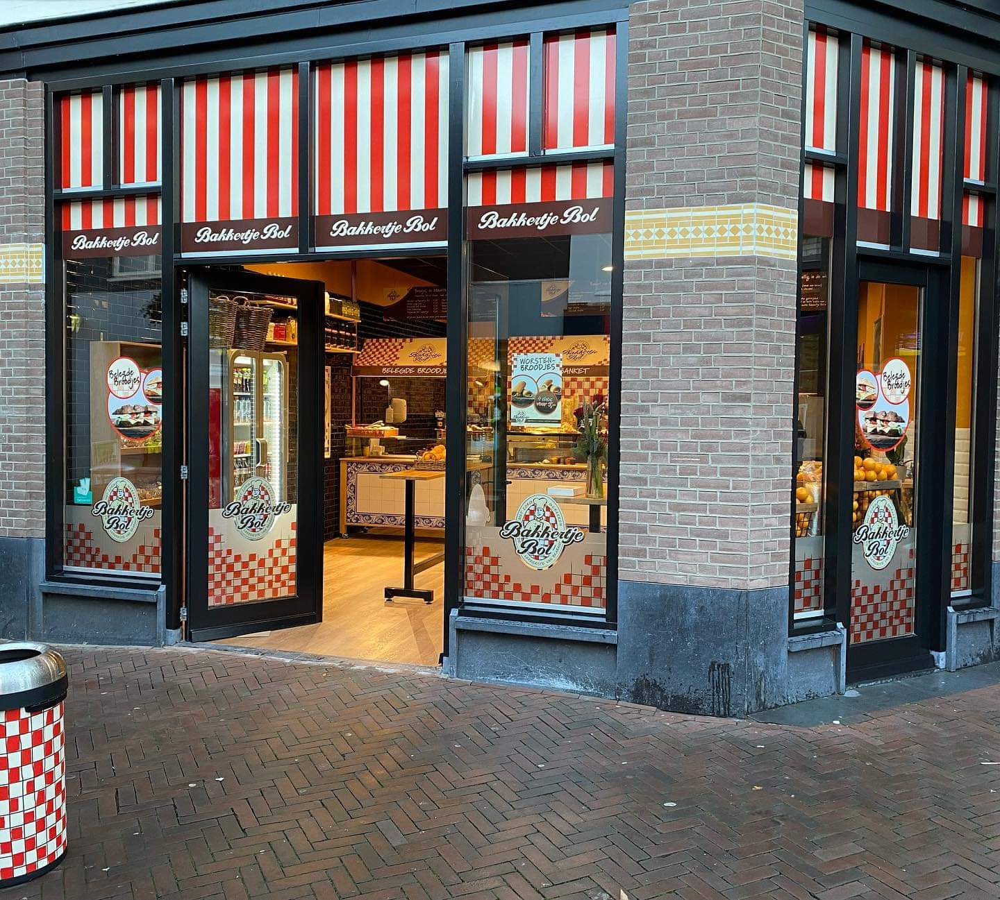
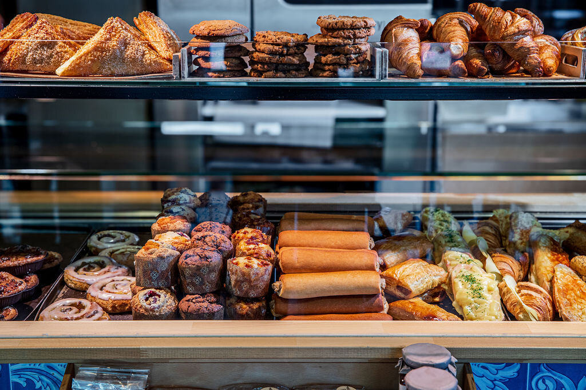
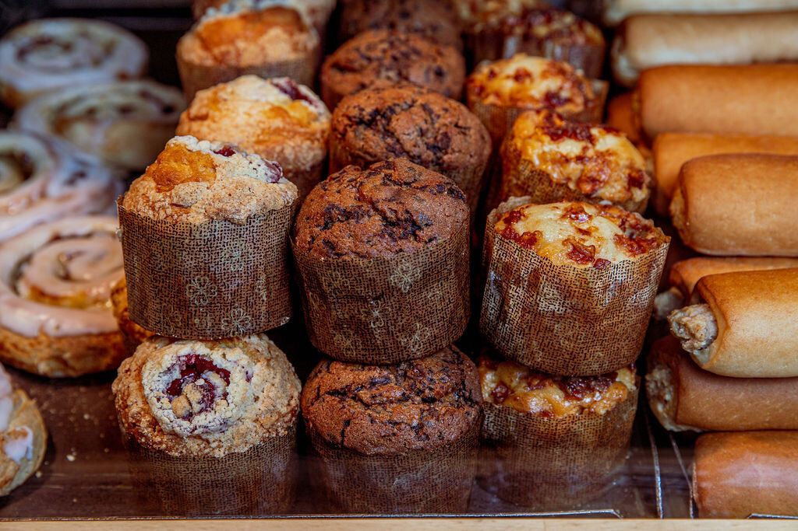
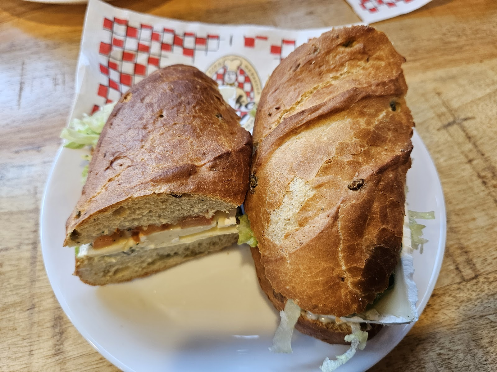
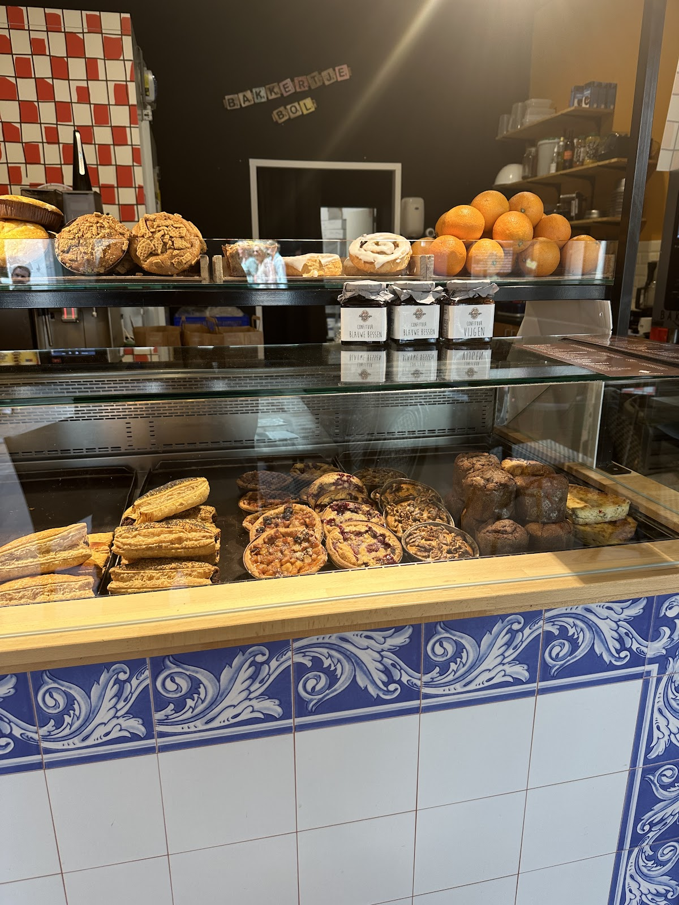
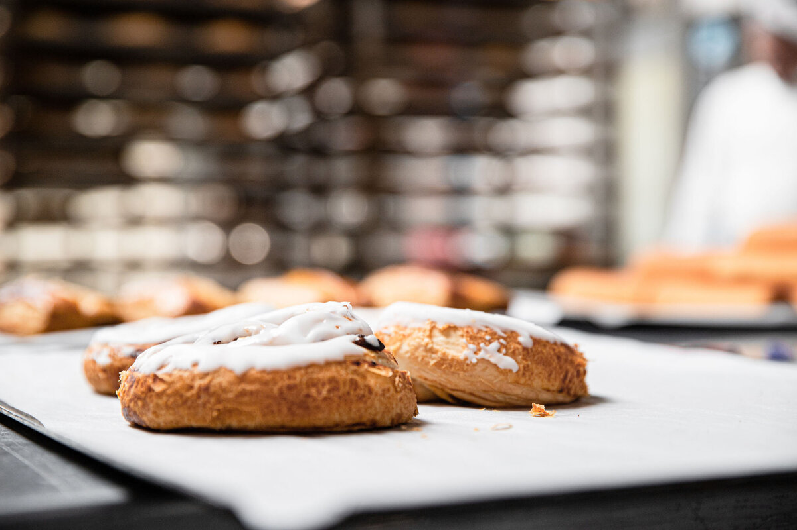

Met zorg gebakken
De lekkerste van Brabant, gewoon op de Hoofdstraat.
Verse belegde broodjes, warme worstenbroodjes, kaaskruiers en banket. Even binnenlopen voor een lunch aan de statafel, of meenemen voor onderweg.
4.8 op Google uit 89 reviews

Wat er in de toonbank ligt
Hartig voor de lunch, zoet bij de koffie. Wat vandaag vers ligt, zie je het best als je binnenloopt.
- Belegde broodjes
Ook met eiersalade, zoals Jasmijn er een at. - Worstenbroodjes
Het Brabantse visitekaartje. - Kaaskruiers
"Ongelofelijk lekker", aldus een vaste klant. - Muffins, croissants en banket
- Confituur om mee te nemen
Blauwe bessen en vijgen, in het potje van Bol.




Belegde broodjes, worstenbroodjes, banket.
Zo staat het op de ramen en boven de toonbank.
Lunchen bij Bol
Een broodje, een praatje en weer verder. Wat mensen erover zeggen op Google, met 4.8 sterren uit 89 reviews:

"Heerlijk worstenbroodje en broodje eiersalade gegeten. Eigenaar was super vriendelijk, leuk praatje mee gemaakt! Absoluut een aanrader om lekker te lunchen😄."
"Wat een ongelofelijk lekkere kaaskruiers!
Enorm vriendelijk personeel
Aanrader voor verse broodjes in Apeldoorn
⭐️⭐️⭐️⭐️⭐️"
"Vriendelijke mensen, lekker eten, maar denk je dat ze weten dat ze in Gelderland zitten? (Lekkerste van Brabant)(?)"
Dat weten we. Het recept komt uit Brabant, de broodjes liggen in Apeldoorn.
Loop even binnen.
Op de hoek in de Hoofdstraat, je herkent ons aan de rood-witte strepen boven de ramen. Wil je weten of we open zijn, of een grotere bestelling doorgeven? Bel ons gerust.
- Adres
- Hoofdstraat 117
7311 JZ Apeldoorn - Telefoon
- 055 207 7414
- info@bakkertjebol.nl
- Openingstijden
- Bel even, dan hoor je direct of we open zijn.